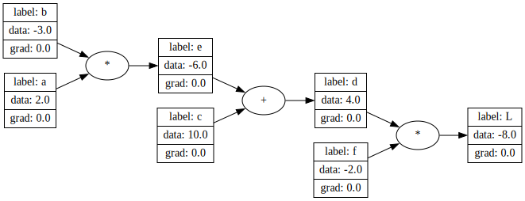
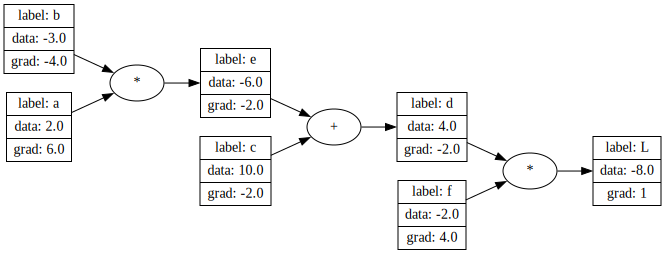
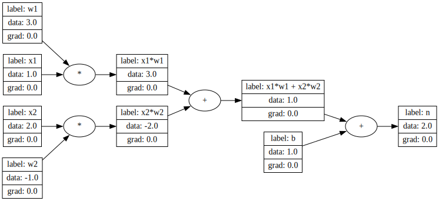

from nanograd.core import ValueLet us Backprop!
Initial variables
Let’s start by defining some initital varaibles, here we have defined complex function L which depends on a, b, c, f with e, d being intermediate variables
a = Value(2.0, label="a")
b = Value(-3.0, label="b")
c = Value(10.0, label="c")
e = a*b; e.label = "e"
d = e + c; d.label = "d"
f = Value(-2.0, label="f")
L = d * f; L.label = "L"
L.draw_dot()
.backward()
L stores the entire function as a directed graph and the ops with which it is linked to the input variables i.e a,b,c,f. Calling .backward() on L will calculate gradients with respect to L for evey intermediate variable and also the input.
Gradients flow to parent nodes using chain rule, the + sign flows the gradients as is to tis parent nodes, where as the * sign flows the gradients to its consitutents by multiplying the weights associated with the “other” parent.
### Let’s consider 2 examples from the above graph
Example #1
d = e + c and L = d * f, now how does L change with respect to d? It is \(\frac{dL}{dd}\) which is f, which is -2. So the gradient at of Value d is -2. Or Increasing d by 1 unit will decrease L by 2 units.
But if we were to look at the effect of e with respect to L, i.e \(\frac{dL}{de}\), it has to involve the sensitivity caused by d since L is connected to e through d. Mathematically, \(\frac{dL}{de} = \frac{dL}{dd} * \frac{dd}{de}\), since \(\frac{dd}{de} = 1\), \(\frac{dL}{de} = -2\)
Example #2
e = b * c and \(\frac{dL}{de} = -2\) as calculated in above example. How sensitive would L be with respect to b depends on how sensitive L is to d, which in turn depends on how sensitive d is to e. So when we compute the sensitivity of L with respect to b, we need to first know how sensitive L is to d, after whichwe need to know how sensitive L is to e throuh which we will know how sensitive L is to b. Using the mntioned chain rule above, \(\frac{dL}{db} = \frac{dL}{de} * \frac{de}{db}\), \(\frac{dL}{de} = -2\) and since e = b*c, \(\frac{de}{db} = c\) therefore \(\frac{dL}{db} = -2 * 2; \frac{dL}{db} = 4\)
The implementation of .backward() is a recursive function which calculates the gradients a each node in a topologically sorted directed graph and flows these gradients back to it’s parent nodes using chain rule
L.backward()
L.draw_dot()
The Neuron
Neuron is a simple function which has a “weight” associated to each input variable and a bias term, it also has an activaton function like tanh or relu. More on this later. Below is a simple Neuron implemented using the Value class by multiplying arbitrary input and weights
#neuron
x1 = Value(1.0, label="x1")
x2 = Value(2.0, label="x2")
w1 = Value(3.0, label="w1")
w2 = Value(-1.0, label="w2")
b = Value(1.0, label="b")
x1w1 = x1*w1; x1w1.label = "x1*w1"
x2w2 = x2*w2; x2w2.label = "x2*w2"
x1w1x2w2 = x1w1 + x2w2; x1w1x2w2.label = "x1*w1 + x2*w2"
n = x1w1x2w2 + b; n.label = "n"
n.draw_dot()
An actual network will contains many of such neurons staked together i a “Layer” which will be connected to other “Layers” to create a neural network. We can also call the .backward() to the final output of function which stores the graph of the entire Neuron.
In the training phase of a neural network we calculate these gradients (grad) of each “weight” and update the value of weight during back propagation. This makes the network “learn”.
n.backward()
n.draw_dot()